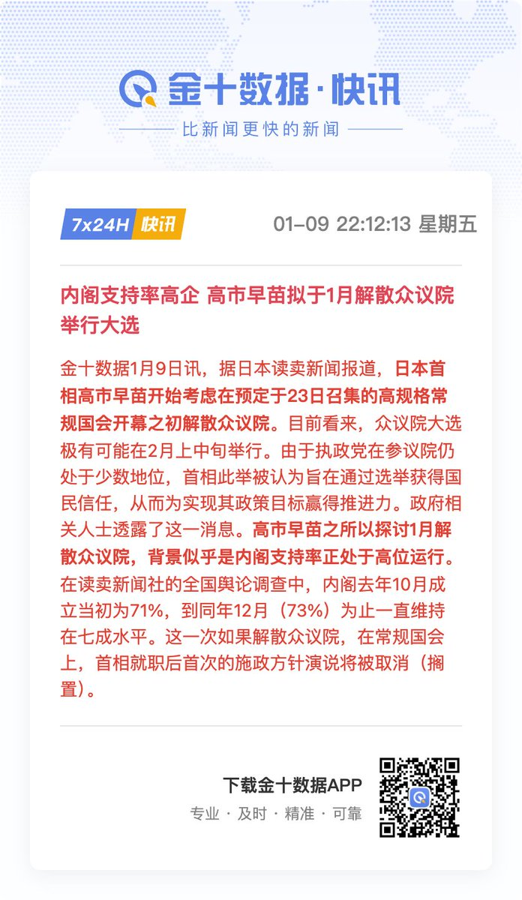

サイバー環状線
@CyberKanjousen
@Trader_S18 但实际上高市最近的支持率在下滑

TraderS | 缺德道人
@Trader_S18
今晚上真热闹，各种新闻此起彼伏，高市早苗准备解散众议院举行大选，这在当下确实应该属于敏感行为了。先说她为什么要解散，按照日本国会惯例，如果首相发表施政方针演说，随后必须安排各党派代表进行质询。这是在野党在全国电视直播面前攻击政府政策、揭露丑闻、拉低内阁支持率的最佳机会。 https://t.co/nyVx2bvFnJ https://t.co/JGeGHvsVBm